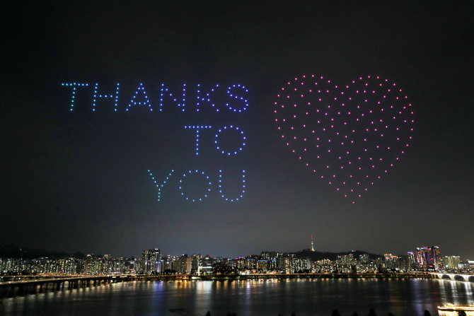

DNBC NEWS
DNBC NEWS
DNBC NEWS
SUPER STRAIN Terrifyingly contagious coronavirus strain that spreads SIX TIMES faster found in South Korea and fast becoming dominant
Chris Bradford Jul 7 2020, 8:11 ET
A TERRIFYINGLY contagious coronavirus strain that spreads SIX TIMES faster than other Covid-19 mutations has been found in South Korea and is fast becoming dominant around the world, it's reported.
At least 270 cases were detected after an outbreak in a Seoul nightclub district and 150 tested positive following an outbreak at an e-commerce centre in Bucheon in May.


The majority of cases in both scenarios were reportedly linked to the aggressive strain.
The strain mutated from the early clade of Covid-19, thought to have originated in Wuhan, which raged across Asia in the early days of the pandemic, according to Arirang News.
Out of the seven strains of the virus, the G strain is said to be three to six times more capable of infecting human cells, according to the scientific journal Cell.
Analysis of 526 genetics samples diagnosed with Covid-19 showed 313 which contained the GH strain.
The GH strain has largely been circulated across Europe and the US, with the South Korean government claiming that the virus was brought in "by foreign visitors" who entered the country between March and April.
GH is now the dominant strain in South Korea, Europe, North America and South America, Chosun Ilbo reports.
South Korea reported 44 more COVID-19 cases on Tuesday, with the number of imported cases exceeding domestic cases for the first time in two weeks, report the Korean Herald.
Some 13,181 people have tested positive for the virus and 285 have died.
Prof Sikora said the death toll could be "less than half the official toll".
SECOND WAVE
South Korea had won international praise for their prompt social distancing action and ruthless efficiency in tracking and tracing, which appeared to quickly get the virus under control.
This allowed night spots across the country to stay open if they complied with strict measures — including social distancing, temperature checks and wearing masks.
But Jung Eun-kyeong, director of the Korea Centers for Disease Control and Prevention (KCDC), said despite these measures the second wave had been driven partly by infections caught and spread by young people in nightclubs and bars in Seoul over the spring holiday weekend.
She said: “We originally predicted that the second wave would emerge in fall or winter.
“Our forecast turned out to be wrong. As long as people have close contact with others, we believe that infections will continue.”
A steady rise in cluster infections saw the country indefinitely extend social distancing in Seoul and the adjacent cities in the Gyeonggi-do province.
A surge in cases in Gwangju saw the local government tighten social distancing measures, banning gatherings of 50 people indoors.
Gatherings of 100 outside are banned and masks are mandatory.
The Minister of Health and Welfare Park Neung-hoo said a total of 90 imported cases were identified on June 22, showing a sharp rise from the previous week's 48.
He said: "The government faces a grave situation as health officials need not only to contain locally transmitted infections, but also manage imported cases."
Seoul’s mayor Park Won-soon feared that the country is losing control over a virus resurgence and wouldn't hesitate to reimpose stronger social distancing measures if infections failed to come below an average of 30 over a three day period.
Mr Park said: "If Seoul gets penetrated (by the virus), the entire Republic of Korea gets penetrated."
